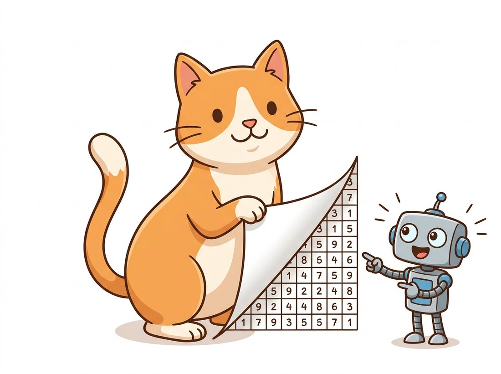
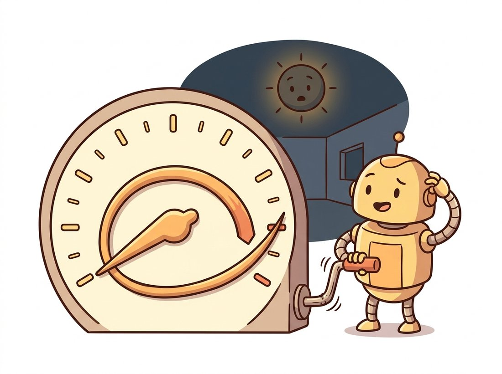

"People keep telling me I have hidden depth. Technically I have three channels, a dtype, and trust issues about my value range."
A Mildly Philosophical Pixel
An image in Python is not represented by a NumPy array; it is a NumPy array, full stop. Once you accept that, three questions describe any image completely: what is its shape (how many rows, columns, and channels), what is its dtype (what kind of number lives in each cell), and what value range do those numbers occupy. Every operation in this book, from a Gaussian blur in Chapter 3 to a denoising step inside a diffusion model in Chapter 33, is just arithmetic on this array. This section builds that mental model from the ground up.
This is the first section of the book, so we begin at the absolute beginning: not with light, not with cameras (that story is told in Chapter 1), but with the object your code actually touches. Open an interpreter and follow along; every snippet below runs as written, with no image files required. The illustration below captures the single idea this section turns on.

1. The Image Is the Array Beginner
A grayscale image is a two-dimensional grid of brightness values. In NumPy terms, it is a 2-D array of shape $(H, W)$: $H$ rows and $W$ columns. The element at row $y$, column $x$ is the pixel at that location, and mathematically we treat the image as a function
$$I : \{0, \dots, H-1\} \times \{0, \dots, W-1\} \rightarrow \mathbb{V},$$
where $\mathbb{V}$ is the set of representable values (for the common 8-bit case, the integers $0$ to $255$). Two conventions surprise newcomers immediately. First, the origin is the top-left corner, not the bottom-left as in mathematics class: row indices grow downward. Second, indexing is img[row, col], that is, vertical coordinate first. Figure 0.1.1 makes both conventions concrete, and Section 0.4 returns to the trouble they cause when mixed with the $(x, y)$ convention used by drawing and resizing functions.
img[2, 5]: row first, then column.Let us build exactly this kind of object from nothing. The code below synthesizes a horizontal brightness ramp, then interrogates it the way you should interrogate every image you ever load: shape, dtype, extreme values.
import numpy as np
# A horizontal ramp: each row runs 0..255 left to right.
row = np.linspace(0, 255, 320, dtype=np.uint8) # one row, 320 values
img = np.tile(row, (240, 1)) # stack it 240 times
print(img.shape) # (240, 320) -> 240 rows (H), 320 columns (W)
print(img.dtype) # uint8
print(img.min(), img.max()) # 0 255
print(img[120, 160]) # 127 -> the pixel at row 120, column 160
Everything you know about NumPy now applies to pictures. Slicing crops: img[60:180, 80:240] is a rectangular region of interest. Fancy indexing selects: img[img > 200] = 255 brightens highlights, a one-line preview of the thresholding we study properly in Chapter 2. Aggregations measure: img.mean() is the average brightness of the whole frame. There is no separate "image API" to learn for any of this; the array API is the image API.
Before doing anything with an image, ask: (1) What is its shape? $(H, W)$ means grayscale, $(H, W, 3)$ means color, $(H, W, 4)$ means color plus alpha. (2) What is its dtype? uint8, uint16, and float32 imply different value ranges and different arithmetic behavior. (3) What is its actual value range? A float image whose values run 0 to 255 instead of 0 to 1 is a bug waiting to detonate. Printing these three facts takes one line and prevents the majority of pipeline failures you will ever encounter.
2. Channels: The Third Axis Beginner
Color enters as a third axis. A color image is an array of shape $(H, W, 3)$, where the last axis holds the three color components of each pixel. In the RGB convention used by Pillow, scikit-image, Matplotlib, and essentially all deep learning code, those components are red, green, and blue in that order; OpenCV famously stores them reversed, as BGR, a historical accident dissected in Section 0.4. Indexing img[y, x] now returns a length-3 vector rather than a scalar, and img[:, :, 0] peels off an entire channel as a 2-D array. Figure 0.1.2 shows the geometry: three aligned planes stacked along the last axis.
img[y, x] pierces all three planes at once and returns the pixel's color vector; slicing img[:, :, c] extracts one full plane.The following snippet constructs a tiny color image by direct channel assignment, then verifies what landed where. Building images by hand like this is more than a toy exercise: it is the standard way to create test fixtures for vision code, because you know the ground truth of every pixel.
import numpy as np
img = np.zeros((100, 300, 3), dtype=np.uint8) # black canvas, RGB order
img[:, :100, 0] = 255 # left third: pure red
img[:, 100:200, 1] = 255 # middle third: pure green
img[:, 200:, 2] = 255 # right third: pure blue
print(img[50, 50]) # [255 0 0] red pixel
print(img[50, 150]) # [ 0 255 0] green pixel
print(img[50, 250]) # [ 0 0 255] blue pixel
red_plane = img[:, :, 0]
print(red_plane.shape, red_plane.mean().round(1)) # (100, 300) 85.0
Two more channel layouts deserve a mention now so they do not ambush you later. Images with transparency carry a fourth alpha channel, shape $(H, W, 4)$. And deep learning frameworks prefer the channel axis first: a PyTorch image tensor is $(C, H, W)$, and a batch is $(N, C, H, W)$. The conversion is a single np.transpose(img, (2, 0, 1)), but forgetting it is a rite of passage we will formalize in Chapter 18.
Because reshape and transpose both "change the shape," learners often write img.reshape(3, H, W) to move from channel-last $(H, W, 3)$ to channel-first $(C, H, W)$. In fact reshape reinterprets the existing byte stream without moving any data, so it does not group the three values of one pixel into a channel; it slices the flat buffer into three blocks and shreds the image into unrecognizable bands. Reordering an axis requires np.transpose (or np.moveaxis), which actually relocates the data. The trap is that both calls return an array of shape $(3, H, W)$ with no error, so the bug only surfaces as a model that mysteriously refuses to learn. Rule of thumb: use reshape to split or merge axes, never to swap their order.
The reason the channel axis comes last in NumPy imaging is cache locality: the three bytes of one pixel sit adjacent in memory, so operations that touch whole pixels stream beautifully through the CPU. The reason deep learning frameworks put channels first is also cache locality, just for a different consumer: convolution kernels want each channel contiguous. Same argument, opposite conclusions, decades of transposes.
3. Dtypes: The Contract About What Numbers Mean Intermediate
The dtype of an image array is not a storage detail; it is a contract. It declares how much memory each value occupies, what range it can represent, and, by strong convention, what range it is expected to occupy. The three dtypes you will meet constantly are summarized in Table 0.1.1.
| Dtype | Bytes/value | Representable range | Conventional image range | Typical sources |
|---|---|---|---|---|
uint8 | 1 | 0 to 255 | 0 to 255 | JPEG/PNG files, OpenCV defaults, screens |
uint16 | 2 | 0 to 65535 | 0 to 65535 | 16-bit PNG/TIFF, medical and scientific sensors, RAW pipelines |
float32 | 4 | ±3.4×1038 | 0.0 to 1.0 (or -1.0 to 1.0 in generative models) | scikit-image outputs, neural network inputs |
An 8-bit channel offers $2^8 = 256$ distinct levels, which is roughly the limit of what human eyes distinguish under normal viewing; a 16-bit channel offers $2^{16} = 65536$ levels, which matters when you plan to stretch shadows or process medical scans, as discussed when we treat bit depth and dynamic range in Chapter 1. Floats exist not for storage but for mathematics: the moment you average, filter, or feed an image to a network, you want real-number arithmetic without overflow. Memory follows directly from the contract: a 12-megapixel RGB photo costs $4000 \times 3000 \times 3 = 36$ MB as uint8 and four times that, 144 MB, as float32. That factor of four decides batch sizes on GPUs for the rest of the book.
The danger zone is integer arithmetic. Unsigned 8-bit values wrap around modulo 256, so adding brightness can make pixels darker, as the meter in the illustration below shows:

import numpy as np
a = np.full((2, 2), 200, dtype=np.uint8)
b = np.full((2, 2), 100, dtype=np.uint8)
print(a + b)
# [[44 44]
# [44 44]] because (200 + 100) % 256 == 44: wraparound!
# The safe patterns:
print((a.astype(np.uint16) + b).clip(0, 255).astype(np.uint8))
# [[255 255]
# [255 255]] promote, clip, demote
mean = (a.astype(np.float32) + b.astype(np.float32)) / 2
print(mean.astype(np.uint8))
# [[150 150]
# [150 150]] averages need float (or uint16) intermediates
Formally, uint8 addition computes $(a + b) \bmod 256$, while what you almost always want is the saturating sum $\min(a + b, 255)$. OpenCV's cv2.add saturates for exactly this reason, one of several arithmetic conventions we contrast carefully in Section 0.4. The second classic dtype accident is conversion without rescaling: calling astype(np.uint8) on a float image in $[0, 1]$ truncates nearly everything to zero. Conversions must rescale, $x_{\text{uint8}} = \lfloor 255 \, x_{\text{float}} + 0.5 \rfloor$, not merely cast.
You could write your own conversion utility that checks the input dtype, rescales to the target range, rounds, and clips: about 15 lines with all the branches done right. scikit-image ships it as one line per direction:
from skimage.util import img_as_float32, img_as_ubyte
f = img_as_float32(img_u8) # uint8 0..255 -> float32 0.0..1.0
u = img_as_ubyte(f) # float 0..1 -> uint8 0..255, rounded and clipped
That is a 15-to-2 line reduction, and the library handles the parts you would forget: negative float inputs raise instead of wrapping, uint16 scales by 257 rather than naive truncation, and bool images map cleanly to 0 and 255.
Who: A machine learning engineer at a medical imaging startup, preparing CT slices for a detection model.
Situation: Source scans arrived as 16-bit DICOM-derived TIFFs with diagnostically meaningful detail in narrow intensity bands.
Problem: A data-loading utility written for photos called astype(np.uint8) on the 16-bit arrays. Values above 255 wrapped modulo 256, shredding the intensity structure; the training images looked like static in exactly the regions radiologists cared about, and small-lesion recall sat at 0.58 against a target of 0.85.
Dilemma: The team weighed two responses. One camp wanted to push on the model: a deeper backbone and heavier augmentation to "learn through" the noisy inputs, a multi-week training spend. The other suspected the data and wanted to audit ingestion first, a half-day of plumbing that risked finding nothing. The model-first path was the team's reflex; the engineer pressed for the cheap data audit before any GPU time.
Decision: The engineer added a dtype audit at ingestion (log every file's dtype, min, max), replaced the cast with an explicit windowed rescale from the 16-bit range to float32, and made the loader refuse any image whose dtype it did not recognize.
Result: Lesion recall rose from 0.58 to 0.86 with zero model changes, and the ingestion audit caught two further format surprises in the following month.
Lesson: A cast is not a conversion. Every dtype change must state where the values came from and where they are going.
4. Under the Hood: Memory, Strides, Views & Copies Advanced
One level beneath shape and dtype sits the machinery that makes NumPy fast: a flat block of bytes plus strides, the number of bytes to step to move one position along each axis. For a contiguous $(H, W, 3)$ uint8 image the strides are $(3W, 3, 1)$: one byte to the next channel, three bytes to the next pixel, $3W$ bytes to the next row. The byte offset of element $(y, x, c)$ is simply
$$\text{offset}(y, x, c) = y \cdot 3W + x \cdot 3 + c.$$
The three numbers multiplying $y$, $x$, and $c$ here are exactly the strides $(3W, 3, 1)$, which is no coincidence: a stride is just how far you jump in the flat buffer to move one step along an axis, so the offset of any element is each coordinate times its stride, added up. Figure 0.1.3 unrolls a small image into its flat buffer to make this concrete, and shows why a slice can read the same bytes without moving any of them.
img[1:, 2:] (shaded cells) does not copy anything: the view records a start offset and reuses the parent's strides to read the same bytes, which is why writing through a view mutates the original.Why should a practitioner care? Because strides explain the single most consequential performance fact about NumPy images: slicing does not copy. A crop like roi = img[100:200, 50:150] creates a view, a new array object pointing into the same bytes with adjusted offsets and strides. Views make cropping free, but they also mean that writing into a view writes into the original, and that some downstream consumers (certain OpenCV functions, serialization, C extensions) require contiguous memory and will either copy behind your back or refuse non-contiguous input.
import numpy as np
img = np.zeros((240, 320, 3), dtype=np.uint8)
print(img.strides) # (960, 3, 1) bytes per step along each axis
roi = img[100:200, 50:150] # a view: no pixels are copied
roi[:] = 255 # ... so this writes into img itself!
print(img[150, 100]) # [255 255 255] the "original" changed
flipped = img[::-1] # vertical flip as a negative-stride view
print(flipped.strides) # (-960, 3, 1)
print(flipped.flags['C_CONTIGUOUS']) # False
safe = img[100:200, 50:150].copy() # an independent crop
print(np.shares_memory(img, roi), np.shares_memory(img, safe)) # True False
.copy() is the explicit way to cut the cord.To feel how much "no copy" buys you, picture cropping the top-left quarter of that 12-megapixel photo a thousand times: a thousand views allocate three small array objects each and touch zero pixels, finishing in microseconds, while a thousand .copy() calls move nine megabytes apiece and grind through gigabytes of memory traffic. The slice that looks like it cut out a region actually cut out nothing; it just wrote down new directions for reading the same bytes. That is why img[::-1] can flip a frame instantly: a vertical flip is one minus sign on a stride, not a single pixel moved. The rule of thumb: treat views as read-only windows unless mutation of the parent is exactly what you intend, and reach for .copy() whenever an image crosses a function boundary that might write. We will see this rule earn its keep in Section 0.4, where an in-place ROI edit corrupts a source image, and again throughout Chapter 5, where geometric operations must decide between viewing and resampling.
Difficulty: beginner, about 30 minutes. Make the view-versus-copy lesson visual. Load one photo and produce a panel of eight transforms that cost zero pixel moves because each is just a stride trick: the original, a vertical flip (img[::-1]), a horizontal flip (img[:, ::-1]), a 2x downsample (img[::2, ::2]), a center crop, a transpose, a single-channel extraction, and the red channel zeroed in a copy. For each panel, print whether it shares memory with the original (np.shares_memory) and whether it is C-contiguous, then display all eight in a labeled Matplotlib grid. The build leans only on this section's material: slicing, negative and stepped strides, and the views-share-memory rule. It makes a striking portfolio image with a one-line caption that surprises most engineers, that a flip and a crop touch no pixels at all, and it cements the instinct to ask "view or copy?" before every edit.
The shape-dtype-strides contract this section teaches is being standardized across the entire scientific Python world. The Python Array API standard (the 2023.12 revision and its successors) defines a common interface that NumPy 2.0 (released June 2024) implements natively, and scikit-image has been rolling out experimental array-API support since version 0.25 (late 2024) so the same image code can run on CuPy GPU arrays or PyTorch tensors. Zero-copy exchange between frameworks rides on DLPack, which is how torch.from_numpy and torch.utils.dlpack hand a 36 MB photo to the GPU without duplicating a byte. Meanwhile the dtype frontier keeps moving downward: vision training increasingly runs in bfloat16 and, on 2024-2026 accelerators such as NVIDIA's Blackwell generation, in 8-bit FP8 formats, making "what exactly does this number mean" a live research question rather than a beginner's footnote.
5. Looking Ahead: From Arrays to Everything Else Beginner
Every later chapter consumes the model built here. Histograms in Chapter 2 are statistics over these array values. Convolution in Chapter 3 slides kernels across these axes. PyTorch tensors in Chapter 18 are this same object with gradients and a transposed channel axis, and the noise that diffusion models learn to remove in Chapter 33 is sampled into float arrays shaped exactly like the ones you built today. The next section widens the view from the object itself to the ecosystem of libraries that all agreed, with one famous color-order exception, to speak this array language.
A colleague brightens an image with img + 60 where img is uint8, and reports that the sky in the result turned dark gray. Explain precisely what happened to a sky pixel of value 230, state the general formula for the corrupted result, and propose two distinct fixes that preserve the uint8 output dtype. Then explain why (img + 60).clip(0, 255) is not one of them.
Write a function checkerboard(h, w, square, c0=0, c1=255) that returns an $(h, w)$ uint8 checkerboard with cells of side square pixels, using only array operations (no Python-level double loop over pixels; a hint: integer-divide coordinate grids from np.arange, then test parity). Extend it to produce an RGB version where odd squares are a color of your choice. Verify correctness by checking the mean value analytically and with .mean().
For a contiguous uint8 array of shape (480, 640, 3), predict on paper the strides of: (a) the array itself, (b) img[::2, ::2], (c) img.transpose(2, 0, 1), and (d) img[:, ::-1]. Check each prediction in NumPy, then determine which of the four results are C-contiguous and which share memory with the original, using .flags and np.shares_memory. Summarize in one paragraph when a vision pipeline should insert np.ascontiguousarray.